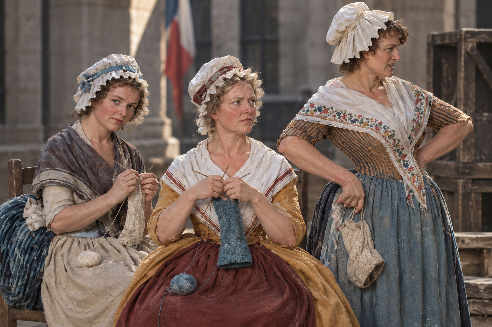
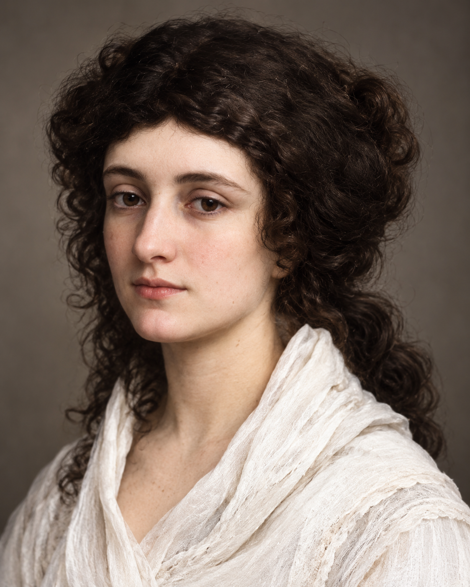
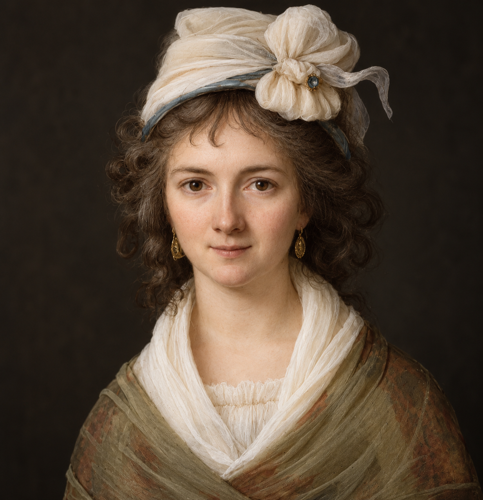
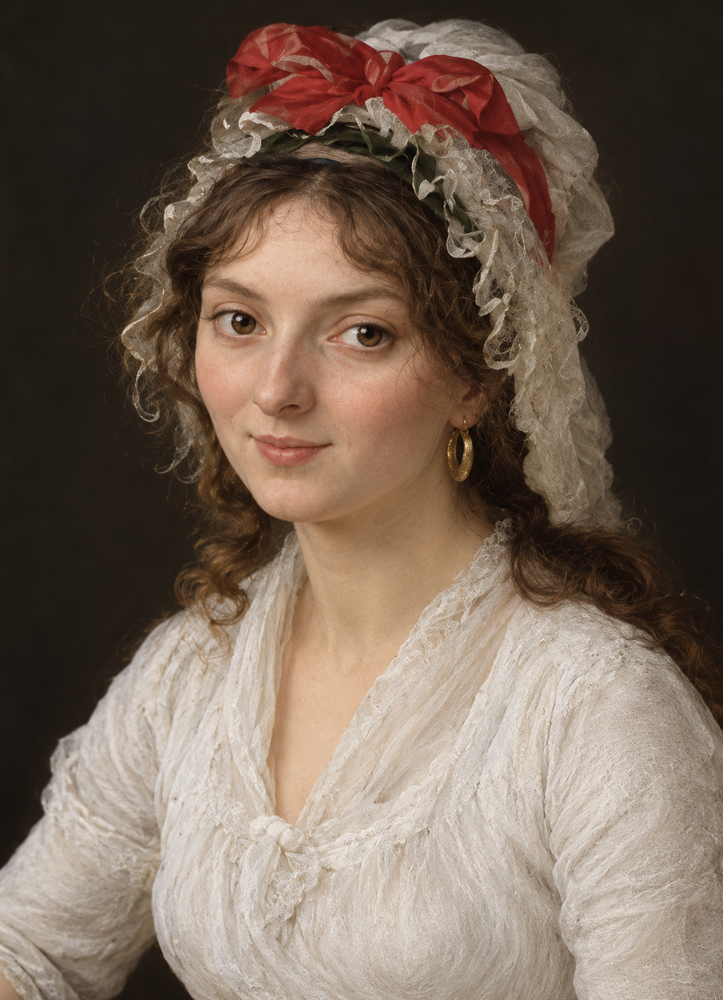
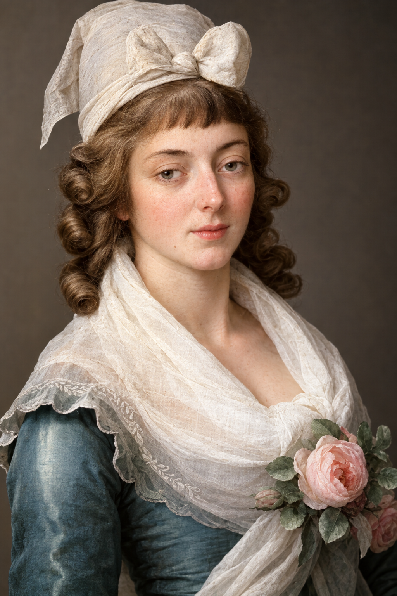
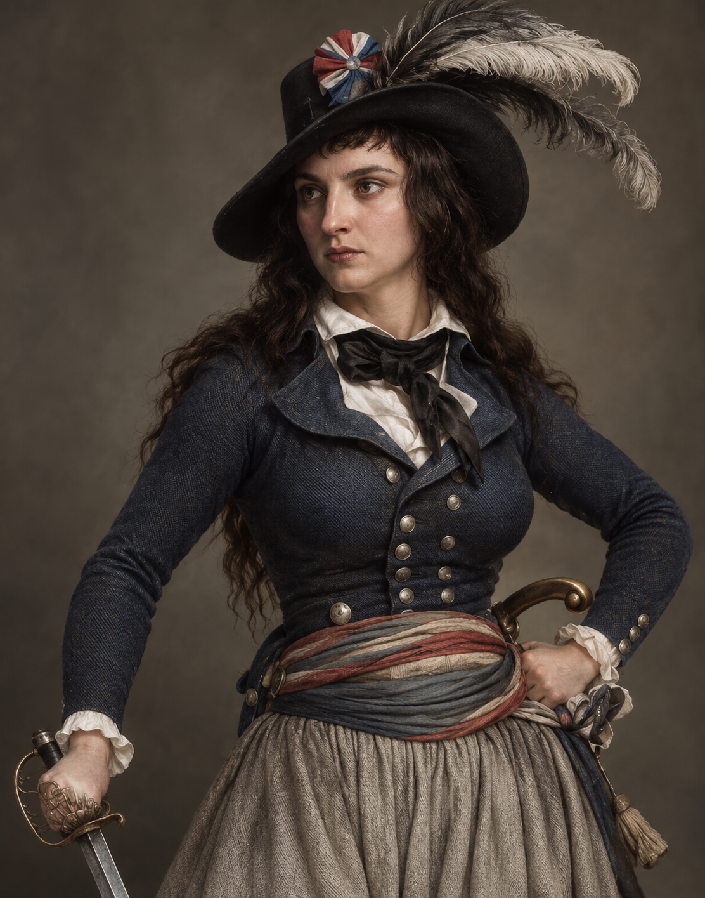
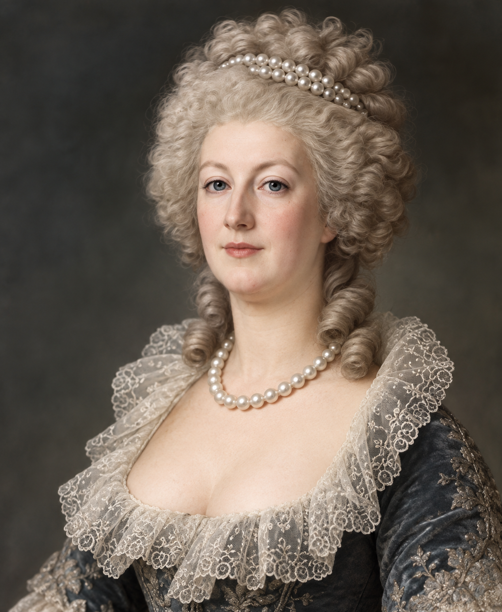
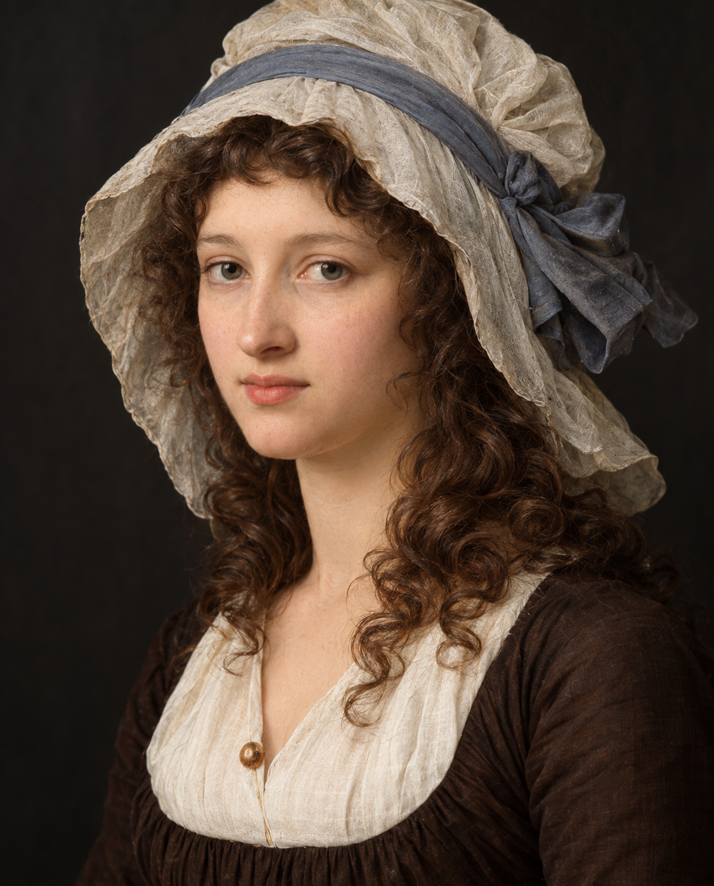
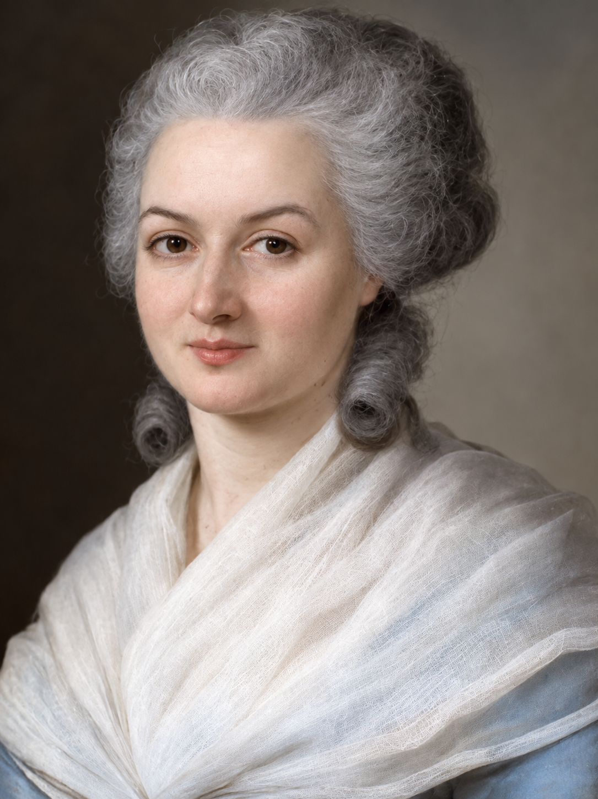

Le donne della Rivoluzione
Biografie, idee e scelte collegate al diario.

Soggetto collettivoLe tricoteuses
Militanza popolare e stereotipo
Esplora →
1756–1822Louise-Félicité de Kéralio
Scrittrice e giornalista
Esplora →
1765–data di morte non accertataClaire Lacombe
Attrice e militante repubblicana
Esplora →
1768–1838Pauline Léon
Diritto alle armi e associazionismo
Esplora →
1754–1793Madame Roland
Reti politiche e ambiente girondino
Esplora →
1762–1817Théroigne de Méricourt
La voce pubblica e la violenza della diffamazione
Esplora →
1755–1793Maria Antonietta
Regina, diplomazia e immagine del nemico
Esplora →
1768–1793Charlotte Corday
L’assassinio politico come falsa soluzione
Esplora →
1748–1793Olympe de Gouges
L’universalità dei diritti messa alla prova
Esplora →